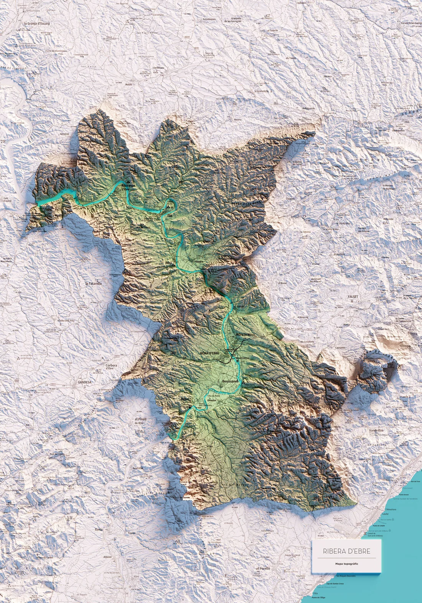
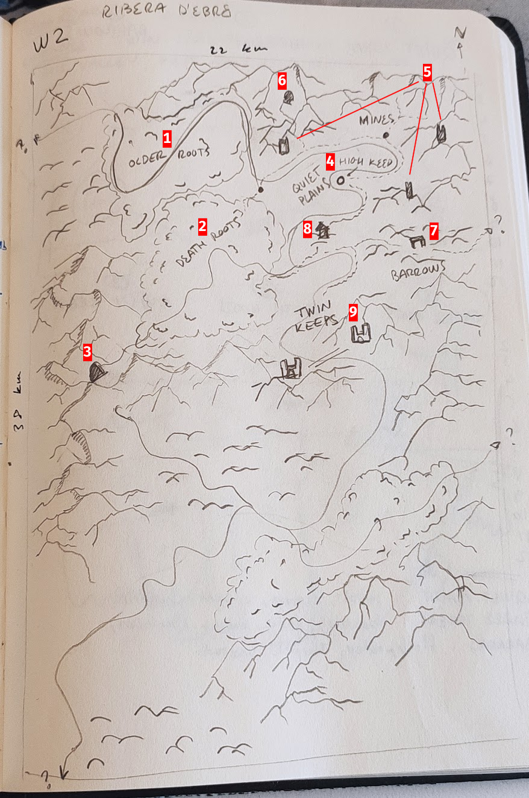

Last Updated on October 31, 2025
Welcome back to the Gygax 75 Challenge series, this blog will covers Week 2 of the challenge. If you want to take a look at the previous post, you can find it here.
As described in the challenge, we will be drawing a map and start populating it with at least one large settlement, two other kinds of settlement, one major terrain feature, a mysterious site to be explored and one dungeon. It is also recommended to do it in a sheet of hex paper—on the software equivalent—but I will start with some rough sketches and then transfer my map to hex-map in the next blog post.
I took the advise regarding scale. The author recommended 23x14 hexes with a scale of 1 mile to 1 hex which in my opinion is a decent chunk of land. Here I share a blog post where the author shows that the entire Elder Scrolls V Skyrim map fits inside a single 6-mile hex, but I digress. Of course, before I could continue ahead, I had changed the miles to kilometers, because ’uropean, and ended up with a 38x22km approx (roughly 10 6-mile hexes or 10 Skyrim maps).
This means the area is roughly 836 squared kilometers. As always, this means nothing to my brain so I jumped to Wikipedia to find a more familiar mental image that I could understand. My go-to pages when I try to make sense of actually “how big an area is” is to look at the Comarques of Catalonia (my homeland).
I sorted the list table by area and looked for some comarca whose area was somewhat similar to 836, and, low-and-behold, I found Ribera d’Ebre has an area of roughly 827km², not bad. After finding a geographic map on the internet, I honestly fell in love with it, it has everything I want in my initial map and I decided I would use it as my backbone inspiration.
Here is the topographic image I found online.
The map above has virtually everything I needed to have for the first map:
I mean, I wanted to change a lot of things, but the overall structure is undeniably there. So I took out my notebook and started sketching the rough topographical outline and then sprinkling some locations with placeholder names. After some time I had this (I added some keys to facilitate explaining it later).
You certainly noticed that the bottom half is quite empty, and there is a reason for that. I intend to worldbuild by playing, meaning that I want to develop just the essentials for an area and then solo-play in it to develop it further. This way I can let my ideas simmer for a while before making them canon.
With that out of the way, here is what’s in the map and some ideas I have of what I would like there to be in the bottom half.
Not done, to be honest. I’ve been postponing this step for months and I decided to publish this page for now. In the future I will “patch” this section. At the moment I’m working on Spark Tables, so hopefully I can write a post in the upcomming weeks about this topic and finish my random tables.